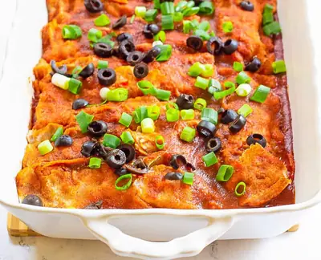

Vegan Enchiladas with Black Beans and Sweet Potatoes

Ingredients
- Cooking Spray to grease casserole dish
- 2 tsp olive oil
- 3 medium sweet potatoes (diced)
- 1 yellow onion (diced)
- 1 red pepper (diced)
- 15 oz fire roasted tomatoes (1 can)
- 2 cups prepared medium salsa
- 4 cloves garlic (minced)
- 15 oz black beans, rinsed and drained (1 can)
- 1/2 cup vegetable broth
- 1 tsp ground cumin
- 1 tsp chili powder
- 3/4 tsp salt (more or less to taste)
- 15 oz tomato sauce (1 can)
- 1 1/2 cups vegetable broth
- 1 tbsp chili powder
- 1 tsp ancho chili powder
- 1/2 tsp chipotle chile powder (optional)
- 1 tsp garlic powder
- 1 tsp onion powder
- 1 tsp dried oregano
- 12 corn tortillas (warmed)
- 2 tbsp each, diced olives and green onions (for topping)
Steps
- Bring all ingredients for the sauce to a simmer in saucepan over medium heat. Whisk to combine, then remove from heat.
- Saute olive oil, garlic, onion, and red pepper in a large pan until cooked through - about 5 minutes. While that is cooking, dice your sweet potato.
- To the pan, add the sweet potatoes, tomatoes, salsa, broth, cumin, and chili powder - bring to a boil. Reduce to simmer and let cook, covered for ~20 minutes -- until the sweet potatoes are soft.
- Mash the potato mixture with a potato masher - but leave slightly chunky. Add in the black beans and cook 5 minutes.
- Preheat oven to 350 degrees F. Spray a 9x13 casserole dish with cooking spray. Spread 1/2 cup of sauce at the bottom of the dish. Then fill each tortilla with the sweet potato mixture.
- Assembly: Roll the tortillas, and pack close together seam-side down in baking dish. Top with remaining sauce.
- Bake at 350 degrees for 15 minutes. Top with green onions and olives, serve, and enjoy!
Recipe by Anjali Shah · The Picky Eater, from The Picky Eater. Saved here for personal use; the original has the full notes, tips and photos. Open original